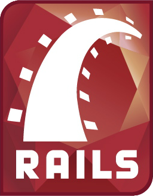

Resume
Full Stack Web Developer
Download ResumeEducation
Master of Computer Science & Information Systems - Southern University at New Orleans (2015)
GPA: 3.93
Developed a mobile application for Android operated devices as a final project for my graduate degree, using App Inventor 2.
Bachelor of Computer Information Systems (CIS) - Al-Zaytoonah University of Jordan (2011)
Experience
Code Immersion Bootcamp - Tech Talent South
Dallas, TX (April 2016 – Present)
- Enrolled in a Coding Bootcamp that covers the fundamentals of web development and programming.
- Topics covered: Ruby on Rails, HTML, CSS, JavaScript, APIs, Databases, Material Design, Git, GitHub, and Ruby Gems.
- Developed UGiftMe, a social website that allows users to find out what gift(s) their friends desire by simply visiting their page, as a final project using Ruby on Rails.
Graduate School Teaching Assistant (TA) - Southern University at New Orleans (SUNO)
New Orleans, LA (September 2013 – May 2015)
- Assisted graduate program professors with grading, class preparations, lectures, and research. Conducted computer lab assistance, including assisting lab attendees with assignments, software, hardware issues, and other computer related support.
- Developed a mobile application for Android operated devices as a final project for my graduate degree, using App Inventor 2.
- Assisted the school’s IT department with software installation for the labs and faculty.
- Helped the faculty and lab attendants with software and hardware troubleshooting.
- Obtained fundamental knowledge in several IT fields including Project Management, Systems Analysis, System Development Life Cycle (SDLC), Information Security, Web Design, Database, and Programing.
IT & Supply Chain Manager - International Rescue Committee (IRC)
Amman, Jordan (December 2011 – May 2013)
- Voted Employee of the Month among IRC offices worldwide.
- Managed the IT and Supply Chain department, including monitoring and supervision of all activities performed by the team, prioritized and distributed tasks effectively and efficiently ensuring all requests were tracked and a proper follow up was provided.
- While managing a team of 13 employees, I worked with Field Office IT personnel, Supply Chain staff, and emergency staff to ensure proper implementation of IRC’s IT and Supply Chain practices in all field offices according to IRC’s standard policies and manuals.
- Liaised with headquarters regarding all IT related tasks and ensured the implementation of recommended IT policies and regulations, including proper installation of ICT equipment, software, and maintenance in both main and field offices.
- Implemented job and site specific training to ensure that all IT and Supply Chain staff possessed the knowledge and skills commensurate with their responsibilities.
- Monitored all IT and Supply Chain sections of budgets and tracked expenditure, and performed follow up as necessary, including timely information and budgetary comments regarding any realignment.
- Identified staffing and/or skill gaps and made sure these gaps/needs were filled.
- Trained newly hired IT and Supply Chain staff in IT procedures/practices, warehousing, procurement, and transportation procedures.
Technical Assistant, Operational Center Geneva (Iraqi Mission) - Doctors without Borders / Médecins Sans Frontières (MSF)
Amman, Jordan (July 2009 – December 2011)
- Conducted the proper installation and management of all IT equipment at the MSFCH office and apartments.
- Installed and updated software on all MSF machines according to the organization’s standards and regulations.
- Conducted any necessary troubleshooting on all MSF IT equipment.
- Provided technical support for all MSF staff.
- Performed regular checks to ensure all machines operated properly and all needed maintenance was performed.
- Participated in the procurement process for all IT related purchases for the MSF office and guesthouses.
- Installed new IT equipment, when needed, including desktops, laptops, printers, scanners, and photocopiers.
- Participated in weekly management meetings to ensure all technical needs were covered and gave an update on any challenges for the weekly plan.
-
Ensured the proper use, monitoring and maintenance of infrastructures, installations and equipment of computers in coordination with the IT department in Geneva.
Skills
Back-end . Front-end . Ruby on Rails . HTML . CSS
APIs . Databases . Materialize . Git . GitHub . Ruby Gems
Systems Analysis . System Development Life Cycle (SDLC) . Project Management

